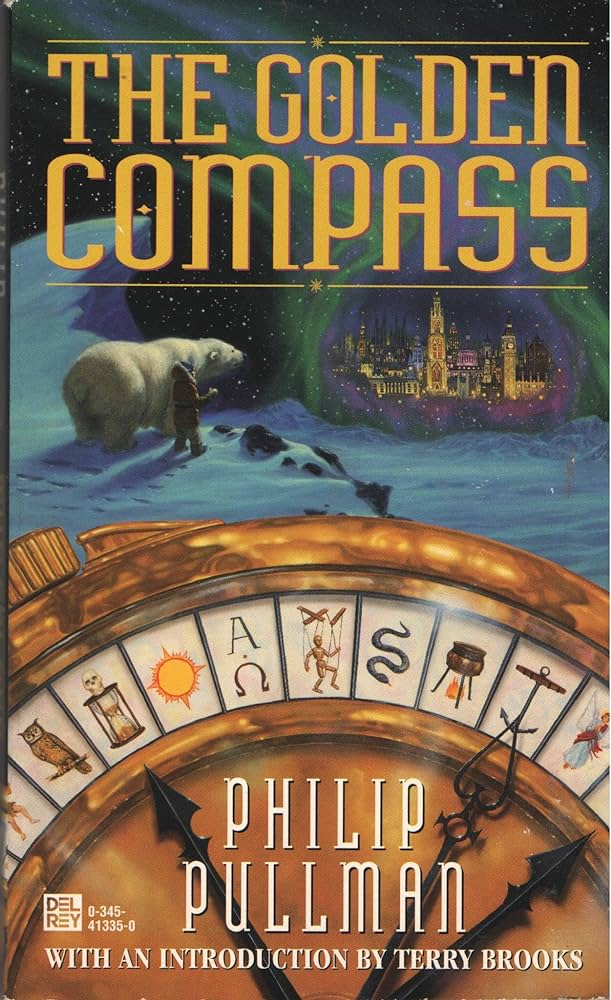
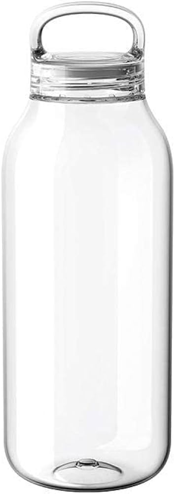
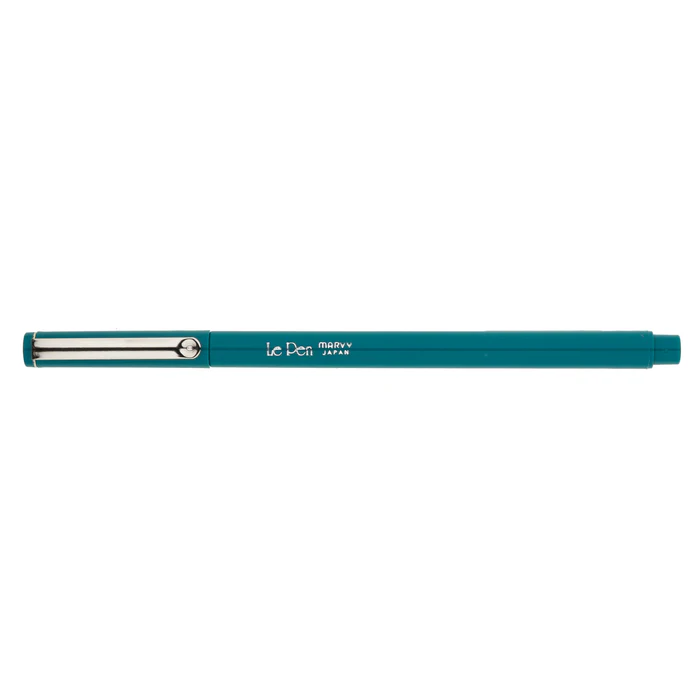

Favorite Fruit
🍒
Four Things in My Bag
  

My Personal “Prof. Dr. Style” of 2024
1 — create and maintain an intentional web presence that serves as generous portal to what you want to share
2 — consider web as medium and unique material, not just a 1:1 to IRL experience
3 — empower self and others to have agency on www & internet at large
Web Experiments
One
Two
Three